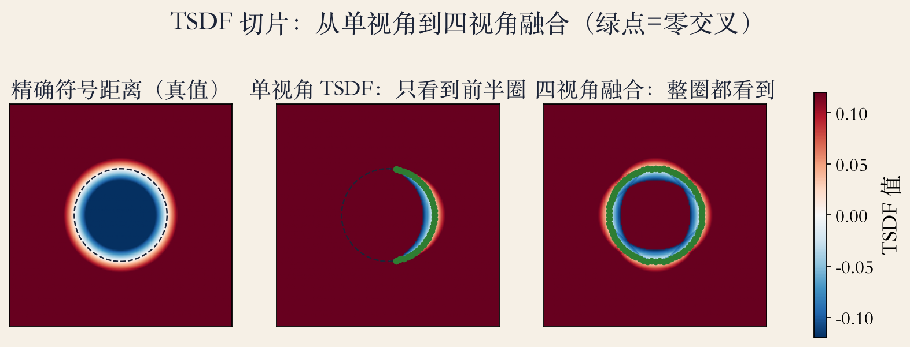
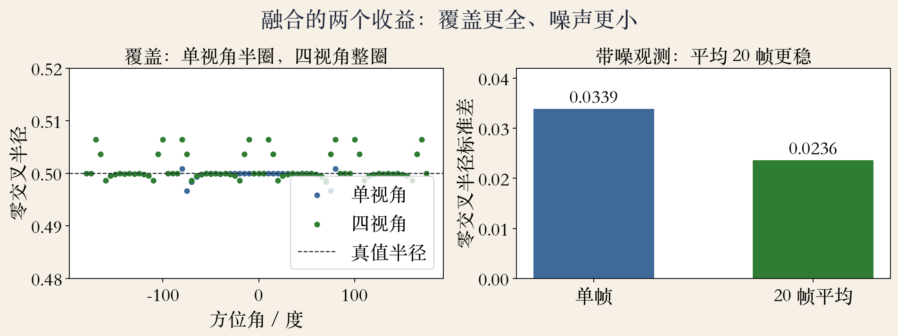
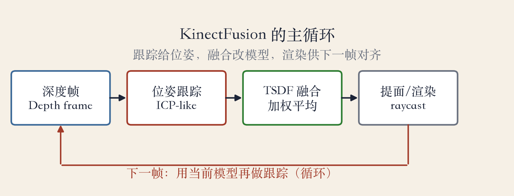

第 13 章 · 深度图融合
一帧不够：把多帧叠成模型
一帧深度图只能拍到物体的一面。
多帧对齐、合并，叠成完整模型。
range data merging 的核心是 TSDF。
这一集讲融合；配准留给下一集。
依据：原书第 821–824 页
三个词
range data merging：多帧合并
TSDF：截断符号距离函数
KinectFusion：实时融合
正课第一百一十三集
01 / 12
从 ICP 到 TSDF
三个词：配准、融合、提面
ICP 是三维配准最常用的技术。
TSDF 拟合所有三维数据点。
先对齐，再融进体素，最后提面。
本集只讲融合与 TSDF。
依据：原书第 821–822 页
两条路
ICP：找最近点，解刚体变换
TSDF：把观测写进体素
ICP 只保证局部最优
正课第一百一十三集
02 / 12
符号距离 · 内负外正
从深度到符号：d 减 z
表面深度 d，体素深度 z。
d 减 z：沿视线的符号距离。
表面之前为正，之后为负。
符号反了，零交叉就跑偏。
依据：原书第 831 页
sdf = d − z
d：相机到表面；z：相机到体素；单位要一致
正课第一百一十三集
03 / 12
截断 · VRIP
截断：只留表面一层
完整距离场太大，只留表面附近。
负 τ 到正 τ 的窄带，τ 是截断距离。
VRIP 用游程编码分空、已见、变化。
τ 太小漏表面，太大糊错位。
依据：原书第 822 页
省内存的做法
空空间：不必逐体素存
表面附近：才存距离值
游程编码：连续同类压成一段
正课第一百一十三集
04 / 12
加权平均 · 融合
融合：一个体素一个数
同一体素会被很多帧看到。
每次观测有 sdf 和权重 w。
新值 =（旧值×旧权重 + 新观测）/（旧权重+1）。
权重封顶，避免老观测压住新帧。
依据：原书第 822 页
TSDF ← (TSDF·w + sdf) / (w + 1)
权重可封顶；本实验为了看清公式，统一给 1
正课第一百一十三集
05 / 12
实验一 · 三切片
看图：一帧只有半圈
左：精确符号距离；中：单视角；右：四视角。
单视角覆盖 33 个方位，四视角 72 个。
绿点零交叉，虚线是真实圆。
一帧只能看半圈，多视角才补全。
依据：原书第 830–831 页；本集实验

三切片：精确符号距离、单视角、四视角｜程序生成，未用教材或论文原图
正课第一百一十三集
06 / 12
实验二 · 覆盖与噪声
两个收益：补全与去噪
四视角半径误差 0.001375。
单帧标准差 0.0339，20 帧 0.0236。
四视角解决看不全，平均解决看不稳。
左图纵轴放大，真实误差千分之一量级。
依据：本集实验

覆盖与噪声：单/四视角半径，单帧 vs 20 帧标准差｜程序生成，未用教材或论文原图
正课第一百一十三集
07 / 12
失败对照 · 符号与权重
符号、截断、权重，哪个都不能错
符号翻转：零交叉只剩 14 个方位。
半径误差从千分之一量级变成 0.0495。
权重为 0 表示没看见，不是空或实。
提面时，权重 0 的体素不投票。
依据：本集实验
三种状态
有观测：权重非 0
未观测：权重 0
权重 0 不等于空
正课第一百一十三集
08 / 12
KinectFusion · 主循环
跟踪与融合交替
深度帧进来，先做位姿跟踪。
再把这一帧融进 TSDF。
然后提面或渲染，供下一帧对齐。
跟踪错了，融合会把错位写进模型。
依据：原书第 824 页

KinectFusion 主循环：跟踪、融合、提面与渲染｜程序生成，未用教材或论文原图
正课第一百一十三集
09 / 12
引用边界 · 定义与公式
定义可引，工程公式要标
书上第 824 页指向 13.5.1 节。
830–831 页讲内外函数、符号距离、Poisson。
没有给出截断和权重的完整公式。
τ、w 和加权平均按通行定义整理。
依据：原书第 824/830–831 页
引用层级
书：名字、用途、符号距离定义
通行定义：τ、w、加权平均
不冒充原书原句
正课第一百一十三集
10 / 12
工程取舍 · 稀疏体素
分辨率、τ、哈希一起选
体素越细越准，内存按三维体积涨。
τ 越大越容忍位姿误差，窄带越厚。
Octomap 用八叉树和概率占据。
Voxel Hashing、Chisel 用空间哈希。
依据：原书第 824 页
压缩思路
八叉树：远处用大格子
空间哈希：只给表面块分配
参数要匹配场景
正课第一百一十三集
11 / 12
收束 · 下一集
深度图给观测，零交叉给表面
深度帧 → 截断距离 → 加权融合 → 零交叉。
跟踪和融合是一对循环。
下一集：点云怎么先对齐。
先配准，再融合，顺序不能反。
依据：第 13 章；本集实验
主线
深度图给观测
TSDF 存证据
零交叉给表面
正课第一百一十三集
12 / 12